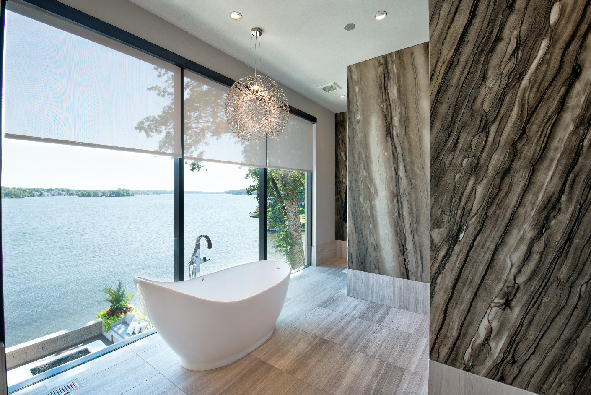

Automated Sunlight Management:
Program your shades and drapes to adjust automatically throughout the day, responding to the position of
the sun and occupancy in your home. By opening and closing them accordingly, you can optimize natural
light levels, reduce glare, and regulate indoor temperature, all while minimizing the need for
artificial lighting and heating or cooling.
Morning "Wakeup" Scene:
Create a "Wakeup" scene that orchestrates a seamless transition into the day. As you stir from sleep,
the curtains gently open, allowing natural light to filter in. Simultaneously, lighting gradually
increases over a five-minute period, mimicking the rising sun, and the temperature adjusts to your
preferred level, ensuring you wake up feeling refreshed and ready to tackle the day.
Morning Departure Routine:
Set your smart thermostat to automatically lower the temperature when you leave for work in the morning.
By reducing heating or cooling while the house is empty, you conserve energy and save on utility bills
without sacrificing comfort. Your home will remain efficiently conditioned, ready to welcome you back
upon your return.
Tailored Exercise Environment:
Create an "Exercise" scene that optimizes your workout environment. Lower the temperature to keep you
cool and comfortable during physical activity, and simultaneously initiate other personalized elements,
such as turning on a TV to your favorite workout program or starting a customized music playlist to
motivate and energize your routine. This integrated approach enhances your exercise experience and
supports your fitness goals.
Convenient Fireplace Control:
With the touch of a button on your smartphone or tablet, ignite your fireplace without having to leave
the comfort of your couch. This convenient feature eliminates the hassle of manual ignition while
ensuring you can enjoy the cozy ambiance and warmth of a crackling fire whenever desired.
Automated Floor Heating Activation:
Between the hours of 4 am and 9 am, when occupants typically prepare for their day, the system evaluates
the temperature reading from the garage attic. If the temperature falls below the preset threshold of 40
degrees Fahrenheit, indicating chilly outdoor conditions, the system automatically triggers the master
bath floor heating switch to activate.
Remote Temperature Sensor Placement:
A remote temperature sensor is strategically installed in the attic of the garage to monitor outdoor
temperature conditions accurately. This sensor serves as a crucial component of the smart floor heating
system, providing real-time data on external temperature variations.
By implementing this system, homeowners can enjoy the comfort of a warm bathroom floor
during cold mornings without the need for manual intervention. The automation based on outdoor
temperature conditions ensures efficient energy usage and enhances overall comfort and convenience.
Back To Home...